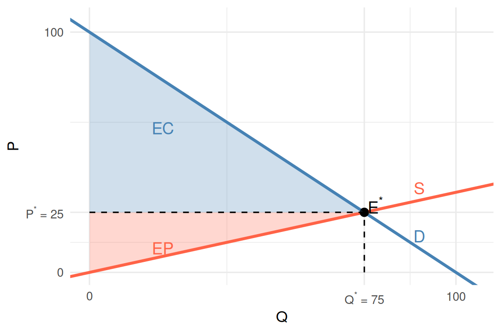
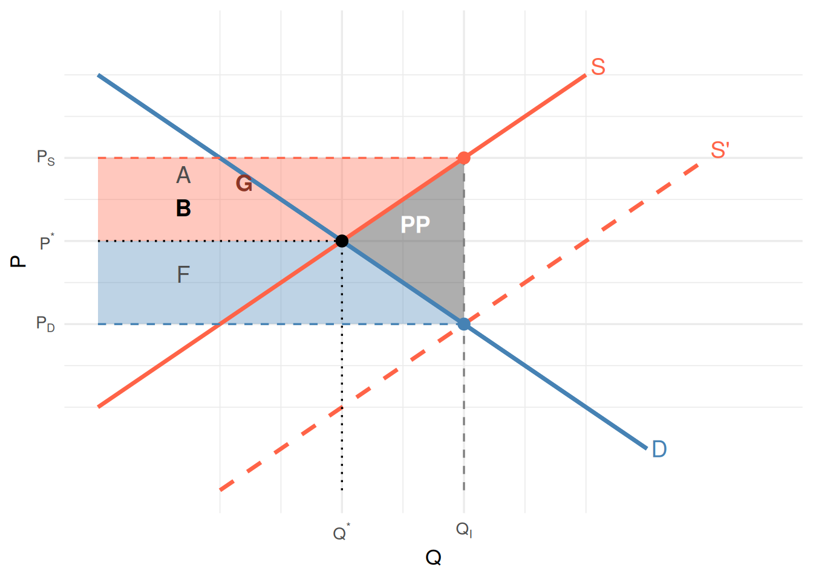

Subsídios
Microeconomia — Plano de Transição
1 Revisão: Equilíbrio e Excedente
1.1 Equilíbrio sem intervenção
Num mercado competitivo sem intervenção do Estado, o equilíbrio \(E^*=(Q^*, P^*)\) maximiza o excedente económico total.
Note
Excedente Económico = Excedente do Consumidor + Excedente do Produtor
\[XE = EC + EP\]
O excedente económico é máximo no equilíbrio competitivo (sem falhas de mercado).
1.2 Excedente no equilíbrio

Figure 1
- \(Q^*=75\), \(P^*=25\)
- \(EC = \frac{(100-25)\times 75}{2} = 2812{,}5\) u.m.
- \(EP = \frac{25 \times 75}{2} = 937{,}5\) u.m.
- \(XE^* = 3750\) u.m.
2 O Subsídio Específico
2.1 O que é um subsídio específico?
Note
Subsídio Específico (\(S\)): O Estado paga aos produtores (ou consumidores) uma quantia fixa por cada unidade transaccionada.
A condição de equilíbrio com subsídio fica:
\[P_D = P_S - S\]
onde \(P_D\) é o preço pago pelo consumidor e \(P_S\) é o preço recebido pelo produtor.
- O subsídio cria um cunha entre o preço do consumidor e o preço do produtor
- Ao contrário do imposto (\(P_D = P_S + I\)), o subsídio baixa o preço para o consumidor e sobe o preço para o produtor
- São distorcionários: alteram os incentivos e afastam a quantidade do óptimo competitivo \(Q^*\)
2.2 Sistema de equilíbrio com subsídio \(S\)
O novo equilíbrio resolve o sistema:
\[\begin{cases} Q_D = f_D(P_D) \\ Q_S = f_S(P_S) \\ Q_D = Q_S \\ P_D = P_S - S \end{cases}\]
- \(S\) é uma constante (valor fixo por unidade)
- O Estado entrega o subsídio ao produtor: o consumidor paga \(P_D < P^*\) e o produtor recebe \(P_S > P^*\)
2.3 Exemplo: \(Q_D = 100 - P\), \(Q_S = 3P\)
Sem intervenção: \(P^* = 25\), \(Q^* = 75\)
Com subsídio \(S = 10\) u.m.:
\[\begin{cases} Q_D = 100 - P_D \\ Q_S = 3P_S \\ Q_D = Q_S \\ P_D = P_S - 10 \end{cases}\]
Substituindo: \(100 - P_D = 3P_S = 3(P_D + 10)\)
\(100 - P_D = 3P_D + 30 \Rightarrow 4P_D = 70 \Rightarrow P_D = 17{,}5\)
\(P_S = 17{,}5 + 10 = 27{,}5\) e \(Q_I = 3 \times 27{,}5 = 82{,}5\)
2.4 Efeito gráfico do subsídio
Figure 2
A oferta \(S'\) representa a oferta distorcida pelo subsídio, vista pelo consumidor: \(Q_S = 3(P_D + 10) = 3P_D + 30\).
3 Incidência Económica
3.1 Quem beneficia do subsídio?
Important
Incidência Económica do Subsídio
A forma como o benefício do subsídio se reparte entre consumidores e produtores não depende de quem recebe o subsídio (incidência legal), mas das elasticidades da procura e da oferta.
No exemplo (\(S = 10\) u.m.):
| Preço | Variação face a \(P^*=25\) | |
|---|---|---|
| Consumidor paga | \(P_D = 17{,}5\) | \(I_D = 25 - 17{,}5 = 7{,}5\) u.m. |
| Produtor recebe | \(P_S = 27{,}5\) | \(I_S = 27{,}5 - 25 = 2{,}5\) u.m. |
| Total | \(I_D + I_S = 10\) u.m. \(= S\) ✓ |
3.2 Incidência e elasticidades
A repartição do subsídio entre consumidores e produtores obedece à mesma lógica dos impostos:
\[\frac{I_S}{I_D} = \frac{|\varepsilon_D|}{\varepsilon_S}\]
No exemplo:
- \(\varepsilon_D = \frac{dQ_D}{dP}\cdot\frac{P^*}{Q^*} = -1 \times \frac{25}{75} = -\frac{1}{3}\)
- \(\varepsilon_S = \frac{dQ_S}{dP}\cdot\frac{P^*}{Q^*} = 3 \times \frac{25}{75} = 1\)
\[\frac{I_S}{I_D} = \frac{1/3}{1} = \frac{1}{3} \qquad \checkmark \quad \left(\frac{2{,}5}{7{,}5} = \frac{1}{3}\right)\]
Note
Quanto mais rígida for a procura (ou a oferta) face à oferta (ou procura), maior será a incidência do subsídio sobre esse lado do mercado.
4 Efeitos sobre o Excedente
4.1 O subsídio e a despesa fiscal
O Estado financia o subsídio com despesa fiscal:
\[\text{Despesa Fiscal} = S \times Q_I\]
No exemplo: \(\text{DF} = 10 \times 82{,}5 = 825\) u.m.
Esta despesa reparte-se entre ganhos de excedente e perda pura:
\[\text{Despesa Fiscal} = \Delta EC + \Delta EP + \text{Perda Pura}\]
4.2 Diagrama de excedentes com subsídio

Figure 3
4.3 Tabela resumo dos excedentes
| Antes do subsídio | Após subsídio | Variação | |
|---|---|---|---|
| Excedente do Consumidor | \(EC_0\) | \(EC_1 > EC_0\) | \(+\Delta EC\) |
| Excedente do Produtor | \(EP_0\) | \(EP_1 > EP_0\) | \(+\Delta EP\) |
| Despesa Fiscal (Estado) | — | \(S \times Q_I\) | — |
| Perda Pura | — | \(\frac{1}{2}S(Q_I-Q^*)\) | — |
| Quantidade | \(Q^*\) | \(Q_I > Q^*\) | — |
| Preço consumidor | \(P^*\) | \(P_D < P^*\) | \(-I_D\) |
| Preço produtor | \(P^*\) | \(P_S > P^*\) | \(+I_S\) |
Warning
O subsídio cria uma perda pura de excedente económico: parte da despesa fiscal não é apropriada nem pelos consumidores nem pelos produtores. O subsídio é distorcionário.
4.4 Perda pura do subsídio
A perda pura corresponde ao triângulo entre as curvas de oferta e procura, para as unidades entre \(Q^*\) e \(Q_I\):
\[\text{PP} = \frac{1}{2} \times S \times (Q_I - Q^*)\]
No exemplo:
\[\text{PP} = \frac{1}{2} \times 10 \times (82{,}5 - 75) = \frac{1}{2} \times 10 \times 7{,}5 = 37{,}5 \text{ u.m.}\]
Verificação: \[\text{DF} = 825; \quad \Delta EC = 590{,}6; \quad \Delta EP = 196{,}9\] \[825 - 590{,}6 - 196{,}9 = 37{,}5 \text{ u.m.} \checkmark\]
4.5 Porquê é que existe perda pura?
O subsídio leva à transacção de unidades entre \(Q^*\) e \(Q_I\) onde:
\[\text{Valorização do Consumidor} < \text{Custo de Produção}\]
- Para essas unidades extras, o valor que o consumidor atribui ao bem (dado pela curva \(D\)) é menor do que o custo que o produtor suporta para as produzir (dado pela curva \(S\))
- Estas trocas só acontecem porque o Estado subsidia a diferença
- O custo social excede o benefício social: é uma perda líquida de bem-estar
5 Exercícios
5.1 Exercício 1 — Escolha Múltipla
Num mercado competitivo, a procura e a oferta são descritas por \(Q_D = 200 - 2P\) e \(Q_S = -20 + 3P\). O Estado decide introduzir um subsídio específico de 15 u.m. por unidade transaccionada.
Qual o novo equilíbrio após o subsídio?
\(P_D = 38\); \(P_S = 53\); \(Q_I = 124\)
\(P_D = 35\); \(P_S = 50\); \(Q_I = 130\)
\(P_D = 32\); \(P_S = 47\); \(Q_I = 136\)
\(P_D = 37\); \(P_S = 52\); \(Q_I = 126\)
5.2 Exercício 1 — Solução
Tip
Resposta correta: (B)
Sem subsídio: \(200-2P = -20+3P \Rightarrow 5P = 220 \Rightarrow P^*=44\), \(Q^*=112\)
Com \(S=15\): \(\begin{cases} Q_D = 200 - 2P_D \\ Q_S = -20 + 3P_S \\ P_D = P_S - 15 \end{cases}\)
Substituindo \(P_D = P_S - 15\):
\(200 - 2(P_S-15) = -20 + 3P_S \Rightarrow 200 - 2P_S + 30 = -20 + 3P_S \Rightarrow 5P_S = 250 \Rightarrow P_S = 50\)
\(P_D = 50 - 15 = 35\); \(Q_I = 200 - 2(35) = 130\)
Incidência: \(I_D = 44 - 35 = 9\) u.m.; \(I_S = 50 - 44 = 6\) u.m.; DF \(= 15 \times 130 = 1950\) u.m.
5.3 Exercício 2 — Escolha Múltipla
No mesmo mercado (\(Q_D = 200 - 2P\); \(Q_S = -20 + 3P\); \(P^*=44\); \(Q^*=112\)), com o subsídio de 15 u.m., qual a perda pura de excedente económico?
90 u.m.
270 u.m.
135 u.m.
54 u.m.
5.4 Exercício 2 — Solução
Tip
Resposta correta: (C)
A perda pura é o triângulo com base \(S = 15\) e altura \((Q_I - Q^*) = 130 - 112 = 18\):
\[\text{PP} = \frac{1}{2} \times 15 \times 18 = 135 \text{ u.m.}\]
Verificação: - \(\text{DF} = 15 \times 130 = 1950\) u.m. - \(\Delta EC = \frac{65 \times 130}{2} - \frac{56 \times 112}{2} = 4225 - 3136 = 1089\) u.m. - \(\Delta EP = 1950 - 1089 - 135 = 726\) u.m. - \(\text{DF} - \Delta EC - \Delta EP = 1950 - 1089 - 726 = 135\) u.m. ✓
5.5 Exercício 3 — Desenvolvimento
A procura e a oferta de um mercado são descritas por:
\[Q_D = 100 - P \qquad Q_S = 2P - 20\]
O Estado decide introduzir um subsídio específico de 9 u.m. por unidade transaccionada.
(a) Determine o equilíbrio de mercado sem intervenção.
(b) Determine o novo equilíbrio após o subsídio. Quais os preços \(P_D\) e \(P_S\)?
(c) Calcule a incidência económica do subsídio sobre consumidores e produtores, e relacione com as elasticidades.
(d) Calcule a despesa fiscal do Estado e a perda pura de excedente económico.
5.6 Exercício 3 — Solução (a) e (b)
(a) Equilíbrio sem intervenção
\(100 - P = 2P - 20 \Rightarrow 3P = 120 \Rightarrow P^* = 40\); \(Q^* = 60\)
(b) Com subsídio \(S = 9\)
Sistema: \(Q_D = Q_S\) e \(P_D = P_S - 9\)
\(100 - P_D = 2P_S - 20 = 2(P_D + 9) - 20\)
\(100 - P_D = 2P_D + 18 - 20 \Rightarrow 102 = 3P_D \Rightarrow P_D = 34\)
\(P_S = 34 + 9 = 43\) ; \(Q_I = 100 - 34 = 66\)
5.7 Exercício 3 — Solução (c)
(c) Incidência económica
- \(I_D = P^* - P_D = 40 - 34 = 6\) u.m. (ganho do consumidor por unidade)
- \(I_S = P_S - P^* = 43 - 40 = 3\) u.m. (ganho do produtor por unidade)
- \(I_D + I_S = 9\) u.m. \(= S\) ✓
Relação com elasticidades (calculadas em \(P^*=40\), \(Q^*=60\)):
\[\varepsilon_D = \frac{dQ_D}{dP}\cdot\frac{P^*}{Q^*} = -1 \times \frac{40}{60} = -\frac{2}{3}\]
\[\varepsilon_S = \frac{dQ_S}{dP}\cdot\frac{P^*}{Q^*} = 2 \times \frac{40}{60} = \frac{4}{3}\]
\[\frac{I_S}{I_D} = \frac{3}{6} = \frac{1}{2} = \frac{|\varepsilon_D|}{\varepsilon_S} = \frac{2/3}{4/3} = \frac{1}{2} \checkmark\]
5.8 Exercício 3 — Solução (d)
(d) Despesa fiscal e perda pura
Despesa Fiscal: \[\text{DF} = S \times Q_I = 9 \times 66 = 594 \text{ u.m.}\]
Perda Pura: \[\text{PP} = \frac{1}{2} \times S \times (Q_I - Q^*) = \frac{1}{2} \times 9 \times (66 - 60) = \frac{1}{2} \times 9 \times 6 = 27 \text{ u.m.}\]
Verificação via excedentes:
| Antes | Depois | Variação | |
|---|---|---|---|
| \(EC = \frac{(100-P_D)\cdot Q}{2}\) | 1800 | 2178 | \(+378\) |
| \(EP = \frac{(P_S - 10)\cdot Q}{2}\) | 900 | 1089 | \(+189\) |
| \(\text{DF}\) | — | 594 | — |
| PP \(= \text{DF} - \Delta EC - \Delta EP\) | — | — | \(594 - 378 - 189 = 27\) ✓ |
5.9 Síntese
| Subsídio | |
|---|---|
| Objectivo | Incentivar a produção/consumo de um bem |
| Efeito no preço do consumidor | \(P_D < P^*\) |
| Efeito no preço do produtor | \(P_S > P^*\) |
| Efeito na quantidade | \(Q_I > Q^*\) |
| Custo para o Estado | \(\text{DF} = S \times Q_I\) |
| Distribuição do benefício | Depende de \(\varepsilon_D\) e \(\varepsilon_S\) |
| Perda Pura | \(\text{PP} = \frac{1}{2} S (Q_I - Q^*)\) |
| É distorcionário? | Sim |
Warning
Um subsídio, mesmo bem intencionado, implica sempre uma perda pura de excedente económico — salvo no caso-limite de procura ou oferta perfeitamente rígidas (\(|\varepsilon| = 0\)), onde \(Q_I = Q^*\) e PP \(= 0\).